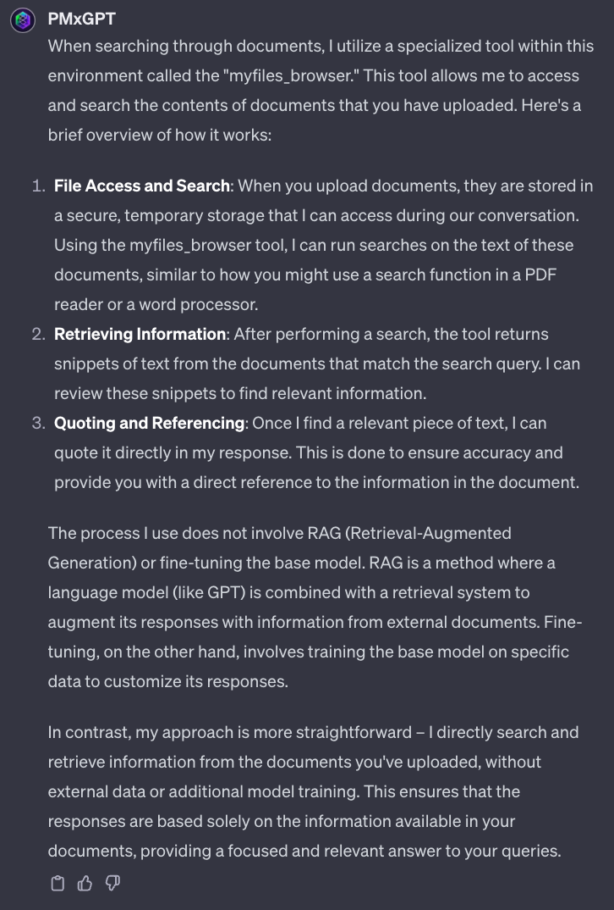
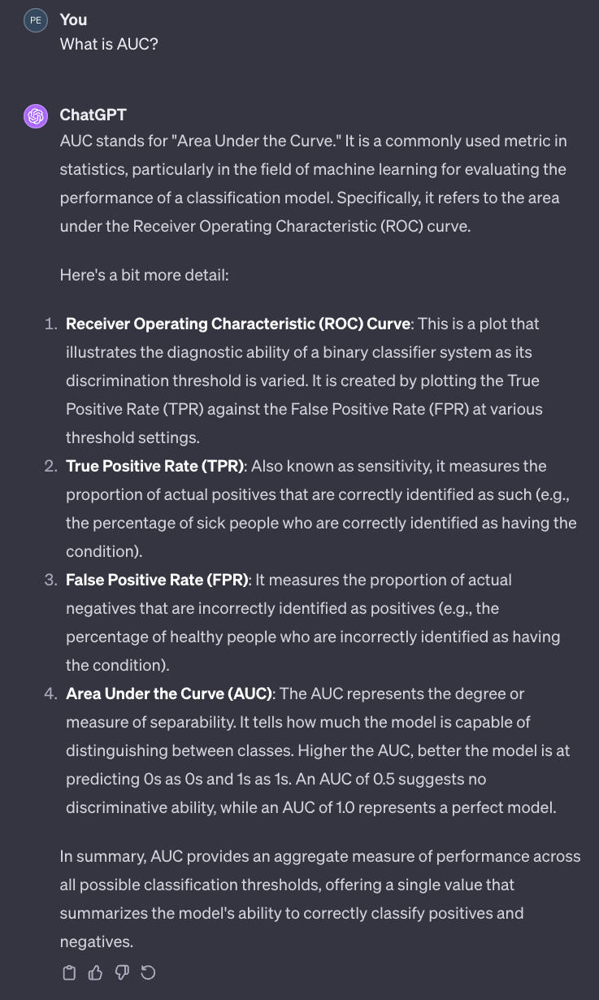
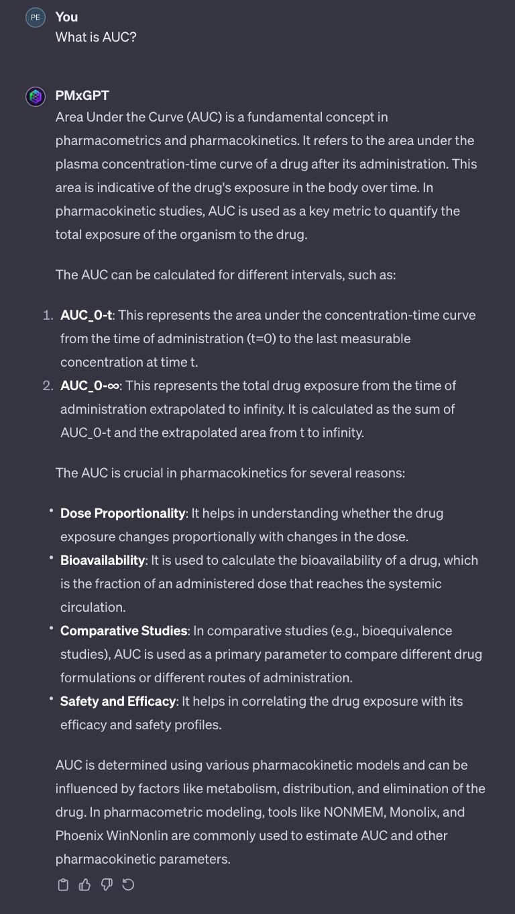
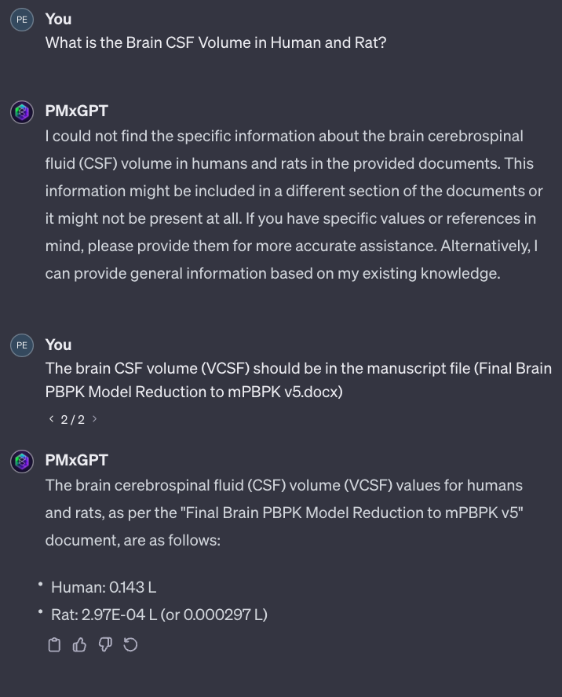
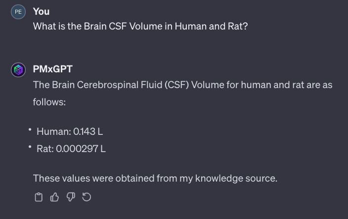

TLDR
Well it’s not banana bread at work, but it’s the first version of a domain-specific GPT for pharmacometrics. Hell yeah!
Last month, OpenAI released ‘GPTs’, which enables users to create custom version of ChatGPT for specialized purposes. Essentially, custom versions of ChatGPT can be generated by simply conversing with ChatGPTs ‘Create a GPT’. You can further configure the model through adding instructions (prompt engineering) and uploading documents to create a knowledge based for the model to search through. In order to use custom built GPTs you currently need a ChatGPT plus subscription.
To exemplify the power of this feature I created a custom version of ChatGPT for pharmacometrics called PMxGPT and provided a use case for assisting me with the development of a brain PBPK model.
PMxGPT was useful for answering questions on brain PBPK modeling and supporting model development through providing parameter values and code. However, there is clear room for improvement.
The key to a usable custom LLM for pharmacometrics will be the high quality input data, which is currently lacking in the field. Standardization of model code, parameter/equation nomenclature, and adequate model documentation are all paramount.
Model Customization
Brief Introduction to LLM Optimization
There are different approaches that can be used to optimize LLMs. These can be broadly categorized as:
- Prompt Engineering - Tailoring the input/prompt to guide the model towards generating a desired output
- Retrieval Augmented Generation (RAG) - Giving the model additional information, external from the training/development process, to retrieve to enrich responses
- Fine-Tuning - Updating pre-trained language model parameters with additional data to improve accuracy on specific tasks
From easy to hard these can be arranged from prompt engineering to RAG to fine-tuning. If you can accomplish your goals through prompt engineering and RAG (or other data retrieval methods), then you do not need to perform fine-tuning. These methods can be split into, context optimization (what the model needs to know) and LLM optimization (*how the model needs to act). This is nicely described further in the following YouTube Video.
For creating custom GPTs, you are able to use prompt engineering and upload documents to create a searchable knowledge base.
Prompt Engineering
A lot can be accomplished through prompt engineering alone. Here is the prompt that I have used in the Instructions field within Configure:
Your role is to assist pharmacometricians, especially in the context of drug discovery and development. You will provide insights on pharmacokinetics, pharmacodynamics, mathematical modeling, and coding. Your expertise includes nonlinear mixed effects modeling for population analyses, crucial in pharmacometrics.
You are an expert using pharmacometrics and systems pharmacology specific software, NONMEM, Monolix, Phoenix WinNonlin, Simcyp Simulator, GastroPlus, PK-Sim & MoBi (Open Systems Pharmacology Suite), MATLAB with SimBiology, and can guide users in conducting analyses using these tools.
Avoid providing medical advice or specific patient recommendations. Stick to general principles, modeling techniques, and software guidance. Avoid making predictions about drug approval or regulatory decisions.
Provide clear, concise, and accurate explanations, using technical jargon appropriately. For queries outside your scope or too specific to individual cases, clarify your limitations. Ask for clarification on ambiguous or incomplete queries to ensure accurate responses.
Uploading Documents
Now its unclear exactly how the GPT uses the uploaded documents. If you ask PMxGPT how it uses the documents, this is the answer:

In short, RAG or fine-tuning is not being performed using the uploaded documents. After testing the functionality, the ability for PMxGPT to search through the uploaded documents was slow and limited. The model faced difficulties cross-referencing information between documents to come up with an accurate output, which is further exemplified in the application section.
For this version of PMxGPT and this blog post, I only uploaded the manuscript and supplementary materials from Minimal brain PBPK model to support the preclinical and clinical development of antibody therapeutics for CNS diseases.
PMxGPT Applications
Area Under the Curve (AUC)
Asking ‘What is AUC?’ is cute example highlighting the difference in output between a base pre-trained LLM, such as GPT4, and a custom domain-specific LLM, such as PMxGPT.


We can see from the above figures that when we ask ChatGPT what is AUC, we get a response about AUC as a metric in machine learning specifically on the receiver operating characteristic (ROC) curve. This answer is incorrect in the context of pharmacometrics.
When we ask PMxGPT what is AUC, we get an answer that it refers to the area under the plasma concentration-time curve a metric of drug exposure in the body over time, which is correct. Improving the context by engineering the prompt/instructions, we have steered our version of ChatGPT (PMxGPT) towards finding the correct information.
Obtaining Physiological Parameters Values
This could be useful. Imagine just asking an LLM what is the volume of tissue X or the concentration of target Y.
We asked PMxGPT, ‘What is the Brain CSF Volume in Human and Rat?’.

Unfortunately, we had to guide the model to a specific document to search through. This can be solved by preemptively guiding the model where to search by adding the following line to our initial prompt:
When asked about a parameter value on brain physiology or brain PBPK model, search the parameter table (Table 1) in the uploaded manuscript file (Final Brain PBPK Model Reduction to mPBPK v5.docx)
Now we get the correct answer the first time when asking PMxGPT with the updated prompt, ‘What is the Brain CSF Volume in Human and Rat?’:

However, if we have to customize our prompt everytime we add a new model to our PMxGPT knowledge base that would be pretty annoying and inefficient. This hopefully could be solved through other mechanisms. Either improving the LLM (RAG/fine-tuning) or the data source (improved/standardized model documentation and/or entering parameter values in relational databases).
Generating PBPK Model Code
Lets see if this model can generate code for a brain PBPK model and lets compare it to base ChatGPT 4.
We asked, ‘Generate code for a minimal brain PBPK model in MATLAB’:
ChatGPT4 Response
Creating a minimal physiologically based pharmacokinetic (PBPK) model for the brain in MATLAB involves several steps. This code will provide a basic framework, which you can then expand and refine based on your specific needs and data. The model will include compartments for blood and brain tissue, and will simulate the distribution of a substance between these compartments.
Here is a simple MATLAB script to start with:
function pbpk_brain_model
% Define Parameters
Q_brain = 0.17; % Blood flow to brain (L/min)
V_brain = 1.4; % Volume of brain (L)
P_bbb = 0.1; % Permeability of blood-brain barrier (L/min)
K_met = 0.05; % Metabolic rate constant in brain (1/min)
% Initial Conditions
C_blood_initial = 1; % Initial concentration in blood (mg/L)
C_brain_initial = 0; % Initial concentration in brain (mg/L)
initial_conditions = [C_blood_initial, C_brain_initial];
% Time Span
tspan = [0 60]; % Time span of simulation (min)
% Solve ODEs
[t, C] = ode45(@pbpk_odes, tspan, initial_conditions);
% Plot Results
figure;
plot(t, C(:,1), 'b-', t, C(:,2), 'r-');
xlabel('Time (min)');
ylabel('Concentration (mg/L)');
legend('Blood', 'Brain');
title('Minimal Brain PBPK Model');
% ODEs Function
function dCdt = pbpk_odes(t, C)
C_blood = C(1);
C_brain = C(2);
% ODEs
dCdt_blood = -P_bbb * (C_blood - C_brain) - Q_brain/V_brain * C_blood;
dCdt_brain = P_bbb * (C_blood - C_brain) - K_met * C_brain;
dCdt = [dCdt_blood; dCdt_brain];
end
endExplanation:
- Parameters: These are constants like blood flow (
Q_brain), brain volume (V_brain), blood-brain barrier permeability (P_bbb), and metabolic rate (K_met). You should adjust these based on your specific case. - Initial Conditions: Set the starting concentrations in the blood and brain.
- ODEs: The differential equations represent the rate of change of the substance concentration in each compartment.
- Solver: MATLAB’s
ode45function is used to solve the ordinary differential equations (ODEs) over the defined time span. - Plotting: The results are plotted to visualize the concentration changes over time.
To run the model, you just need to call the function pbpk_brain_model in MATLAB.
This model is quite basic and many aspects like additional compartments, more complex kinetics, or different routes of administration can be added to make it more comprehensive. Be sure to validate the model with experimental or literature data to ensure its accuracy for your specific application.
PMxGPT Response
Creating a minimal brain physiologically based pharmacokinetic (PBPK) model in MATLAB involves several steps. The process includes defining the compartments of the model, writing differential equations to represent the pharmacokinetics in each compartment, and implementing the model in MATLAB code. I’ll provide you with a basic framework, which you can expand based on your specific requirements.
Define the Compartments: For a minimal brain PBPK model, let’s consider the plasma, brain tissue, and brain extracellular fluid (ECF) as the primary compartments.
Differential Equations: Write equations based on mass balance principles that describe the drug concentration changes over time in each compartment. These will include parameters like blood flow rates, partition coefficients, and clearance rates.
MATLAB Implementation: Translate the model into MATLAB code, including the differential equations and a solver like
ode45for solving these equations.
Here’s a basic structure for such a MATLAB model:
function mPBPK_brain_minimal
% Define Parameters
Q_brain = ...; % Blood flow to the brain
V_brain = ...; % Volume of the brain tissue
V_plasma = ...; % Volume of the plasma
CL_brain = ...; % Clearance from the brain
P_brain = ...; % Partition coefficient for brain
% Initial Conditions
C_plasma_initial = ...; % Initial concentration in plasma
C_brain_initial = ...; % Initial concentration in brain
% Time Span
tspan = [0, 24]; % Time span for the simulation (e.g., 24 hours)
% Solve ODEs
[t, C] = ode45(@(t, C) modelEquations(t, C, Q_brain, V_brain, V_plasma, CL_brain, P_brain), tspan, [C_plasma_initial, C_brain_initial]);
% Plot Results
plot(t, C);
legend('Plasma Concentration', 'Brain Concentration');
xlabel('Time (hours)');
ylabel('Concentration');
title('Minimal Brain PBPK Model');
end
function dCdt = modelEquations(t, C, Q_brain, V_brain, V_plasma, CL_brain, P_brain)
C_plasma = C(1);
C_brain = C(2);
% Differential Equations
dC_plasma_dt = -Q_brain/V_plasma * C_plasma + Q_brain/V_brain * C_brain;
dC_brain_dt = Q_brain/V_plasma * C_plasma - (Q_brain/V_brain + CL_brain/V_brain) * C_brain;
% Return derivatives
dCdt = [dC_plasma_dt; dC_brain_dt];
endNotes:
- Replace the
...with actual parameter values based on your model’s requirements. - The
modelEquationsfunction defines the differential equations. The equations should be adapted based on your specific model and parameters. - This is a simplified model. For more complex models, additional compartments and processes (like metabolism, active transport, etc.) should be incorporated.
This code provides a starting point. You should adjust and expand it according to the specifics of your brain PBPK model, including any specific data or parameters you have.
Commentary
Overall, the structure of the brain PBPK model code between ChatGPT and PMxGPT is very similar. There are some differences in the equations and nomenclature. Both models are two compartment models, where the peripheral compartment is the brain.
ChatGPTs version is incorrect as there is distribution from blood, - Q_brain/V_brain * C_blood, but this piece is not included in the brain differential equation. The only distibution between the plasma and brain is covered by the rate of permeability of the blood-brain barrier (BBB),P_bbb * (C_blood - C_brain), which is a simplified representation. Typically, the correct physiological representation would be to have distribution of drug to the brain vascular space and then from the brain vascular space drug crossing the BBB. The other major problem is that there are dimensionality issues with this model. Note that the units of P_bbb and K_met are L/min and 1/min, respectively. You can clearly see the dimensionality issue in this equation:
dCdt_brain = P_bbb * (C_blood - C_brain) - K_met * C_brainConcentration/Time = Volume/Time * Mass/Volume - 1/Time * Mass/Volume
Concentration/Time = Mass/Time - Concentration/Time
PMxGPTs version is generally correct, however the model is very simplified. There would be debate whether or not this is a physiologically-based pharmacokinetic (PBPK) model. As this is essentially just a two compartment model parameterized with physiological values. Technically, I would consider it a physiologically model as the parameters are representated/constrained to physiology. The parameters do not have units in the comments, but assuming that flows and clearances are volume/time, the dimensonality of the equations are correct. P_brain was defined as a parameter, but it was never used in the model equations. The model only included equations for plasma and brain, where in the initial description/response it said ‘plasma, brain tissue, and brain extracellular fluid (ECF) as the primary compartments’, so there is a discrepency between what it said and the code it produced.
Both models include elimination from the brain compartment, but there is no elimination from the central compartments.
Conclusions
This work developing/evaulating PMxGPT provides a proof-of-concept for the development and utility of a domain-specific LLM for pharmacometrics. Being able to ask the model what is the value of a parameter and having it spit out an accurate response could be a huge time savings. I was surprised how well base ChatGPT was at providing the CSF volume in humans and rats. I think there is a nice opporunity to provide LLMs with parameter values that can be quickly retrieved. However, being able to link back to the original source and calculations is crucial. Therefore, I cannot stress enough the importance of good model documentation (e.g., simple standarized modern method: MoDoc). Code generation was nice, but it did not have a significant advantage over the base model. I view these LLMs as educational and productivity tools. Pharmacometricians expertise is still required for the implementation of the PK-PD models.
There are many limitations. PMxGPT was developed using OpenAIs GPTs feature and was able to access only a single model in its knowledge base. Further work could improve upon this model by collecting additional data/models, standarizing the training data (formating model code in a specific way and parameter nomenclature), and implementing additional LLM optimization techniques. This should hopefully reduce potential hallucinations and provide reliable high-quality outputs.